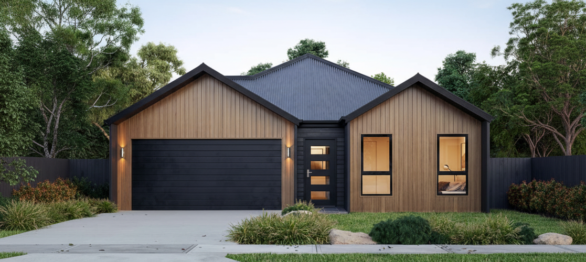
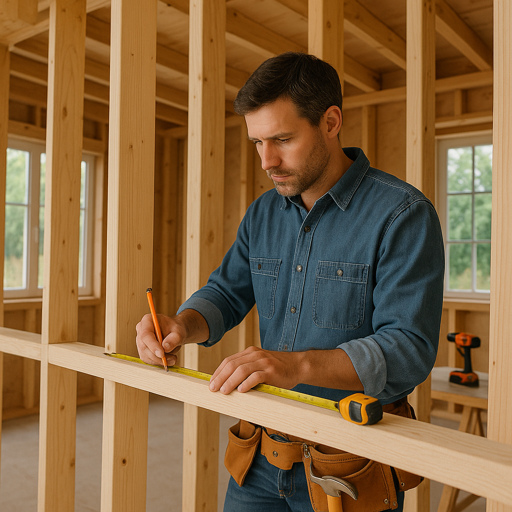

Projekt koncepcyjny
Funkcjonalne układy, bryła, technologia i wstępny kosztorys dopasowany do budżetu.
- 2–3 warianty układu
- Dobór technologii i materiałów
- Szacunkowa wycena

Projekt koncepcyjny – pakiet rozszerzony
Warsztaty startowe i analiza działki (MPZP/WT/media). Definiujemy wymagania, ryzyka oraz kierunek projektowy. Efekt: rysunki koncepcyjne + model bryły, punkt wyjścia do wyceny i projektu wykonawczego.
- 3 rundy iteracji koncepcji w krótkich sprintach
- Moodboardy materiałowe i wstępna paleta kolorów
- Wstępna tabela powierzchni i estymacja kosztów
- Sprawdzenie pod kątem MPZP/WT i przyłączy